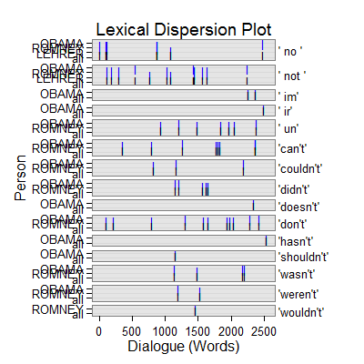

dc_negator(text.var, grouping.var, n.before = 1, tot = FALSE, n.after = n.before, ord.inds = TRUE, markup = c("<<", ">>"), name = "negator", ...)dc_negator_sub(text.var, grouping.var, n.before = 1, tot = FALSE, n.after = n.before, ord.inds = TRUE, markup = c("<<", ">>"), name = "negator_sub", ...)
TRUE condenses sub-units (e.g., sentences)
into turns of talk for that grouping.var.TRUE inds is ordered least to greatest.c("", "") to not mark the negator discourse
markers.termco.dc_negator - Returns returns a list of 2:
countsA termco object of negator discourse connector counts.
negative_wordsA trans_context object of negative words (e.g., not, no, none, never) discourse connectors in context.
dc_negator_sub - Returns returns a list of 4:
countsA termco object of negator discourse connector counts.
negative_wordsA trans_context object of negative words (e.g., not, no, none, never) discourse connectors in context.
negative_prefixA trans_context object of negative prefix (e.g., dis-, il-, im-, ir-, non-, un-) discourse connectors in context. Note that in- and a- prefixes are ignored as these letters begin many non-negator words as well.
negative_contractionsA trans_context object of negative contractions discourse connectors in context.
dc_negator - Extract negator discourse connectors in context.
dc_negator_sub - Extract negator discourse connectors in context typified as
words, prefix, or contractions (not type).
Ryan, G. W. & Bernard, H. R. (2003). Techniques to identify themes. Field Methods. 15(1), 85-109. doi: 10.1177/1525822X02239569
with(pres_debates2012[1:200, ], dc_negator(dialogue, person))$counts person word.count negators 1 OBAMA 943 26(2.76%) 2 ROMNEY 1349 38(2.82%) 3 LEHRER 316 3(.95%) $negator =================================== Event 1: [lines 2-4] LEHRER: But what do you support the voucher system, Governor? ** ROMNEY: What I support is <<no>> change for current retirees and near retirees to Medicare. ROMNEY: And the president supports taking dollar seven hundred sixteen billion out of that program. =================================== Event 2: [lines 8-10] ROMNEY: Their choice. ** ROMNEY: They get to choose and they'll have at least two plans that will be entirely at <<no>> cost to them. ROMNEY: So they don't have to pay additional money, no additional dollar six thousand. =================================== Event 3: [lines 9-11] ROMNEY: They get to choose and they'll have at least two plans that will be entirely at no cost to them. ** ROMNEY: So they <<don't>> have to pay additional money, <<no>> additional dollar six thousand. ROMNEY: That's not going to happen. =================================== Event 4: [lines 10-12] ROMNEY: So they don't have to pay additional money, no additional dollar six thousand. ** ROMNEY: That's <<not>> going to happen. ROMNEY: They'll have at least two plans. =================================== Event 5: [lines 14-16] ROMNEY: I know my own view is I'd rather have a private plan. ** ROMNEY: I'd just assume <<not>> have the government telling me what kind of health care I get. ROMNEY: I'd rather be able to have an insurance company. =================================== Event 6: [lines 16-18] ROMNEY: I'd rather be able to have an insurance company. ** ROMNEY: If I <<don't>> like them, I can get rid of them and find a different insurance company. ROMNEY: But people make their own choice. =================================== Event 7: [lines 22-24] ROMNEY: That's the plan that I've put forward. ** ROMNEY: And, by the way the idea came <<not>> even from Paul Ryan or or Senator Wyden, who's the co author of the bill with with Paul Ryan in the Senate, but also it came from Bill Bill Clinton's chief of staff. ROMNEY: This is an idea that's been around a long time, which is saying, hey, let's see if we can't get competition into the Medicare world so that people can get the choice of different plans at lower cost, better quality. =================================== Event 8: [lines 23-25] ROMNEY: And, by the way the idea came not even from Paul Ryan or or Senator Wyden, who's the co author of the bill with with Paul Ryan in the Senate, but also it came from Bill Bill Clinton's chief of staff. ** ROMNEY: This is an idea that's been around a long time, which is saying, hey, let's see if we <<can't>> get competition into the Medicare world so that people can get the choice of different plans at lower cost, better quality. ROMNEY: I believe in competition. =================================== Event 9: [lines 36-38] OBAMA: One last point I want to make. ** OBAMA: We do have to lower the cost of health care, <<not>> just in Medicare and Medicaid| LEHRER: Talk about that in a minute. =================================== Event 10: [lines 66-68] LEHRER: Beginning with you. ** LEHRER: This is <<not>> a new two minute segment to start. LEHRER: And we'll go for a few minutes, and then we're going to go to health care, OK? =================================== Event 11: [lines 69-71] ROMNEY: Regulation is essential. ** ROMNEY: You <<can't>> have a free market work if you <<don't>> have regulation. ROMNEY: As a businessperson, I had to have I need to know the regulations. =================================== Event 12: [lines 72-74] ROMNEY: I needed them there. ** ROMNEY: You <<couldn't>> have people opening up banks in their in their garage and making loans. ROMNEY: I mean, you have to have regulations so that you can have an economy work. =================================== Event 13: [lines 78-80] ROMNEY: In some places, yes. ** ROMNEY: Other places, <<no>>. LEHRER: Like where? =================================== Event 14: [lines 80-82] LEHRER: Like where? ** ROMNEY: <<No>>, it can become out of date. ROMNEY: And what's happened with some of the legislation that's been passed during the president's term, you've seen regulation become excessive, and it's hurt it's hurt the economy. =================================== Event 15: [lines 84-86] ROMNEY: Dodd Frank was passed. ** ROMNEY: And it includes within it a number of provisions that I think has some <<unintended>> consequences that are harmful to the economy. ROMNEY: One is it designates a number of banks as too big to fail, and they're effectively guaranteed by the federal government. =================================== Event 16: [lines 94-96] ROMNEY: Well, I would repeal and replace it. ** ROMNEY: We're <<not>> going to get rid of all regulation. ROMNEY: You have to have regulation. =================================== Event 17: [lines 101-103] ROMNEY: Let's talk| ** LEHRER: <<No>>, let's <<not>>. LEHRER: Let's let him respond let's let him respond to this specific on Dodd Frank and what the governor just said. =================================== Event 18: [lines 105-107] OBAMA: The reason we have been in such a enormous economic crisis was prompted by reckless behavior across the board. ** OBAMA: Now, it <<wasn't>> just on Wall Street. OBAMA: You had loan officers were that were giving loans and mortgages that really shouldn't have been given, because the folks didn't qualify. =================================== Event 19: [lines 106-108] OBAMA: Now, it wasn't just on Wall Street. ** OBAMA: You had loan officers were that were giving loans and mortgages that really shouldn't have been given, because the folks <<didn't>> qualify. OBAMA: You had people who were borrowing money to buy a house that they couldn't afford. =================================== Event 20: [lines 107-109] OBAMA: You had loan officers were that were giving loans and mortgages that really shouldn't have been given, because the folks didn't qualify. ** OBAMA: You had people who were borrowing money to buy a house that they <<couldn't>> afford. OBAMA: You had credit agencies that were stamping these as Aone great investments when they weren't. =================================== Event 21: [lines 108-110] OBAMA: You had people who were borrowing money to buy a house that they couldn't afford. ** OBAMA: You had credit agencies that were stamping these as Aone great investments when they <<weren't>>. OBAMA: But you also had banks making money hand over fist, churning out products that the bankers themselves didn't even understand, in order to make big profits, but knowing that it made the entire system vulnerable. =================================== Event 22: [lines 109-111] OBAMA: You had credit agencies that were stamping these as Aone great investments when they weren't. ** OBAMA: But you also had banks making money hand over fist, churning out products that the bankers themselves <<didn't>> even <<understand>>, in order to make big profits, but knowing that it made the entire system vulnerable. OBAMA: So what did we do? =================================== Event 23: [lines 113-115] OBAMA: We said you've got banks, you've got to raise your capital requirements. ** OBAMA: You <<can't>> engage in some of this risky behavior that is putting Main Street at risk. OBAMA: We've going to make sure that you've got to have a living will so so we can know how you're going to wind things down if you make a bad bet so we don't have other taxpayer bailouts. =================================== Event 24: [lines 114-116] OBAMA: You can't engage in some of this risky behavior that is putting Main Street at risk. ** OBAMA: We've going to make sure that you've got to have a living will so so we can know how you're going to wind things down if you make a bad bet so we <<don't>> have other taxpayer bailouts. OBAMA: In the meantime, by the way, we also made sure that all the help that we provided those banks was paid back every single dime, with interest. =================================== Event 25: [lines 121-123] OBAMA: Because if you do, then Governor Romney is your candidate. ** OBAMA: But that's <<not>> what I believe. ROMNEY: Sorry, but that's just not that's just not the facts. =================================== Event 26: [lines 122-124] OBAMA: But that's not what I believe. ** ROMNEY: Sorry, but that's just <<not>> that's just <<not>> the facts. ROMNEY: Look, we have to have regulation on Wall Street. =================================== Event 27: [lines 125-127] ROMNEY: That's why I'd have regulation. ** ROMNEY: But I <<wouldn't>> designate five banks as too big to fail and give them a blank check. ROMNEY: That's one of the unintended consequences of Dodd Frank. =================================== Event 28: [lines 126-128] ROMNEY: But I wouldn't designate five banks as too big to fail and give them a blank check. ** ROMNEY: That's one of the <<unintended>> consequences of Dodd Frank. ROMNEY: It wasn't thought through properly. =================================== Event 29: [lines 127-129] ROMNEY: That's one of the unintended consequences of Dodd Frank. ** ROMNEY: It <<wasn't>> thought through properly. ROMNEY: We need to get rid of that provision because it's killing regional and small banks. =================================== Event 30: [lines 131-133] ROMNEY: Let me mention another regulation in Dodd Frank. ** ROMNEY: You say we were giving mortgages to people who <<weren't>> qualified. ROMNEY: That's exactly right. =================================== Event 31: [lines 134-136] ROMNEY: It's one of the reasons for the great financial calamity we had. ** ROMNEY: And so Dodd Frank correctly says we need to have qualified mortgages, and if you give a mortgage that's <<not>> qualified, there are big penalties, except they <<didn't>> ever go on and define what a qualified mortgage was. ROMNEY: It's been two years. =================================== Event 32: [lines 136-138] ROMNEY: It's been two years. ** ROMNEY: We <<don't>> know what a qualified mortgage is yet. ROMNEY: So banks are reluctant to make loans, mortgages. =================================== Event 33: [lines 139-141] ROMNEY: Try and get a mortgage these days. ** ROMNEY: It's hurt the housing market because Dodd Frank <<didn't>> anticipate putting in place the kinds of regulations you have to have. ROMNEY: It's not that Dodd Frank always was wrong with too much regulation. =================================== Event 34: [lines 140-142] ROMNEY: It's hurt the housing market because Dodd Frank didn't anticipate putting in place the kinds of regulations you have to have. ** ROMNEY: It's <<not>> that Dodd Frank always was wrong with too much regulation. ROMNEY: Sometimes they didn't come out with a clear regulation. =================================== Event 35: [lines 141-143] ROMNEY: It's not that Dodd Frank always was wrong with too much regulation. ** ROMNEY: Sometimes they <<didn't>> come out with a clear regulation. ROMNEY: I will make sure we don't hurt the functioning of our of our marketplace and our business, because I want to bring back housing and get good jobs. =================================== Event 36: [lines 142-144] ROMNEY: Sometimes they didn't come out with a clear regulation. ** ROMNEY: I will make sure we <<don't>> hurt the functioning of our of our marketplace and our business, because I want to bring back housing and get good jobs. LEHRER: All right. =================================== Event 37: [lines 154-156] ROMNEY: You know, I was in New Hampshire. ** ROMNEY: A woman came to me and she said, look, I <<can't>> afford insurance for myself or my son. ROMNEY: I met a couple in Appleton, Wisconsin, and they said, we're thinking of dropping our insurance, we can't afford it. =================================== Event 38: [lines 155-157] ROMNEY: A woman came to me and she said, look, I can't afford insurance for myself or my son. ** ROMNEY: I met a couple in Appleton, Wisconsin, and they said, we're thinking of dropping our insurance, we <<can't>> afford it. ROMNEY: And the number of small businesses I've gone to that are saying they're dropping insurance because they can't afford it, the cost of health care is just prohibitive. =================================== Event 39: [lines 156-158] ROMNEY: I met a couple in Appleton, Wisconsin, and they said, we're thinking of dropping our insurance, we can't afford it. ** ROMNEY: And the number of small businesses I've gone to that are saying they're dropping insurance because they <<can't>> afford it, the cost of health care is just prohibitive. ROMNEY: And and we've got to deal with cost. =================================== Event 40: [lines 158-160] ROMNEY: And and we've got to deal with cost. ** ROMNEY: And, <<unfortunately>>, when when when you look at Obamacare, the Congressional Budget Office has said it will cost dollar two thousand five hundred a year more than traditional insurance. ROMNEY: So it's adding to cost. =================================== Event 41: [lines 164-166] ROMNEY: Expensive things hurt families. ** ROMNEY: So that's one reason I <<don't>> want it. ROMNEY: Second reason, it cuts dollar seven hundred sixteen billion from Medicare to pay for it. =================================== Event 42: [lines 167-169] ROMNEY: I want to put that money back in Medicare for our seniors. ** ROMNEY: Number three, it puts in place an <<unelected>> board that's going to tell people ultimately what kind of treatments they can have. ROMNEY: I don't like that idea. =================================== Event 43: [lines 168-170] ROMNEY: Number three, it puts in place an unelected board that's going to tell people ultimately what kind of treatments they can have. ** ROMNEY: I <<don't>> like that idea. ROMNEY: Fourth, there was a survey done of small businesses across the country, said, what's been the effect of Obamacare on your hiring plans? =================================== Event 44: [lines 171-173] ROMNEY: And three quarters of them said it makes us less likely to hire people. ** ROMNEY: I just <<don't>> know how the president could have come into office, facing twenty three million people out of work, rising <<unemployment>>, an economic crisis at the at the kitchen table, and spend his energy and passion for two years fighting for Obamacare instead of fighting for jobs for the American people. ROMNEY: It has killed jobs. =================================== Event 45: [lines 177-179] OBAMA: Well, four years ago, when I was running for office, I was traveling around and having those same conversations that Governor Romney talks about. ** OBAMA: And it <<wasn't>> just that small businesses were seeing costs skyrocket and they <<couldn't>> get affordable coverage even if they wanted to provide it to their employees. OBAMA: It wasn't just that this was the biggest driver of our federal deficit, our overall health care costs, but it was families who were worried about going bankrupt if they got sick, millions of families, all across the country. =================================== Event 46: [lines 178-180] OBAMA: And it wasn't just that small businesses were seeing costs skyrocket and they couldn't get affordable coverage even if they wanted to provide it to their employees. ** OBAMA: It <<wasn't>> just that this was the biggest driver of our federal deficit, our overall health care costs, but it was families who were worried about going bankrupt if they got sick, millions of families, all across the country. OBAMA: If they had a pre existing condition, they might not be able to get coverage at all. =================================== Event 47: [lines 179-181] OBAMA: It wasn't just that this was the biggest driver of our federal deficit, our overall health care costs, but it was families who were worried about going bankrupt if they got sick, millions of families, all across the country. ** OBAMA: If they had a pre existing condition, they might <<not>> be able to get coverage at all. OBAMA: If they did have coverage, insurance companies might impose an arbitrary limit. =================================== Event 48: [lines 180-182] OBAMA: If they had a pre existing condition, they might not be able to get coverage at all. ** OBAMA: If they did have coverage, insurance companies might <<impose>> an arbitrary limit. OBAMA: And so as a consequence, they're paying their premiums, somebody gets really sick, lo and behold, they don't have enough money to pay the bills, because the insurance companies say that they've hit the limit. =================================== Event 49: [lines 181-183] OBAMA: If they did have coverage, insurance companies might impose an arbitrary limit. ** OBAMA: And so as a consequence, they're paying their premiums, somebody gets really sick, lo and behold, they <<don't>> have enough money to pay the bills, because the insurance companies say that they've hit the limit. OBAMA: So we did work on this, alongside working on jobs, because this is part of making sure that middle class families are secure in this country. =================================== Event 50: [lines 184-186] OBAMA: And let me tell you exactly what Obamacare did. ** OBAMA: Number one, if you've got health insurance, it <<doesn't>> mean a government takeover. OBAMA: You keep your own insurance. =================================== Event 51: [lines 187-189] OBAMA: You keep your own doctor. ** OBAMA: But it does say insurance companies <<can't>> jerk you around. OBAMA: They can't impose arbitrary lifetime limits. =================================== Event 52: [lines 188-190] OBAMA: But it does say insurance companies can't jerk you around. ** OBAMA: They <<can't>> <<impose>> arbitrary lifetime limits. OBAMA: They have to let you keep your kid on their insurance your insurance plan until you're twenty six years old. =================================== Event 53: [lines 189-191] OBAMA: They can't impose arbitrary lifetime limits. ** OBAMA: They have to let you keep your kid on their insurance your insurance plan <<until>> you're twenty six years old. OBAMA: And it also says that you're going to have to get rebates if insurance companies are spending more on administrative costs and profits than they are on actual care. =================================== Event 54: [lines 191-193] OBAMA: And it also says that you're going to have to get rebates if insurance companies are spending more on administrative costs and profits than they are on actual care. ** OBAMA: Number two, if you <<don't>> have health insurance, we're essentially setting up a group plan that allows you to benefit from group rates that are typically eighteen percent lower than if you're out there trying to get insurance on the individual market. OBAMA: Now, the last point I'd make before| =================================== Event 55: [lines 194-196] LEHRER: Two minutes two minutes is up, sir. ** OBAMA: <<No>>, I think I had five seconds before you interrupted me, was the <<irony>> is that we've seen this model work really well in Massachusetts, because Governor Romney did a good thing, working with Democrats in the state to set up what is essentially the identical model and as a consequence people are covered there. OBAMA: It hasn't destroyed jobs. =================================== Event 56: [lines 195-197] OBAMA: No, I think I had five seconds before you interrupted me, was the irony is that we've seen this model work really well in Massachusetts, because Governor Romney did a good thing, working with Democrats in the state to set up what is essentially the identical model and as a consequence people are covered there. ** OBAMA: It <<hasn't>> destroyed jobs. OBAMA: And as a consequence, we now have a system in which we have the opportunity to start bringing down costs, as opposed to just leaving millions of people out in the cold.out <- with(pres_debates2012[1:200, ], dc_negator_sub(dialogue, person)) out[1]$counts person word.count negative_words negative_prefix negative_contractions 1 OBAMA 943 4(.42%) 5(.53%) 17(1.80%) 2 ROMNEY 1349 13(.96%) 5(.37%) 20(1.48%) 3 LEHRER 316 3(.95%) 0 0out[2]$negative_words =================================== Event 1: [lines 2-4] LEHRER: But what do you support the voucher system, Governor? ** ROMNEY: What I support is <<no>> change for current retirees and near retirees to Medicare. ROMNEY: And the president supports taking dollar seven hundred sixteen billion out of that program. =================================== Event 2: [lines 8-10] ROMNEY: Their choice. ** ROMNEY: They get to choose and they'll have at least two plans that will be entirely at <<no>> cost to them. ROMNEY: So they don't have to pay additional money, no additional dollar six thousand. =================================== Event 3: [lines 9-11] ROMNEY: They get to choose and they'll have at least two plans that will be entirely at no cost to them. ** ROMNEY: So they don't have to pay additional money, <<no>> additional dollar six thousand. ROMNEY: That's not going to happen. =================================== Event 4: [lines 10-12] ROMNEY: So they don't have to pay additional money, no additional dollar six thousand. ** ROMNEY: That's <<not>> going to happen. ROMNEY: They'll have at least two plans. =================================== Event 5: [lines 14-16] ROMNEY: I know my own view is I'd rather have a private plan. ** ROMNEY: I'd just assume <<not>> have the government telling me what kind of health care I get. ROMNEY: I'd rather be able to have an insurance company. =================================== Event 6: [lines 22-24] ROMNEY: That's the plan that I've put forward. ** ROMNEY: And, by the way the idea came <<not>> even from Paul Ryan or or Senator Wyden, who's the co author of the bill with with Paul Ryan in the Senate, but also it came from Bill Bill Clinton's chief of staff. ROMNEY: This is an idea that's been around a long time, which is saying, hey, let's see if we can't get competition into the Medicare world so that people can get the choice of different plans at lower cost, better quality. =================================== Event 7: [lines 36-38] OBAMA: One last point I want to make. ** OBAMA: We do have to lower the cost of health care, <<not>> just in Medicare and Medicaid| LEHRER: Talk about that in a minute. =================================== Event 8: [lines 66-68] LEHRER: Beginning with you. ** LEHRER: This is <<not>> a new two minute segment to start. LEHRER: And we'll go for a few minutes, and then we're going to go to health care, OK? =================================== Event 9: [lines 78-80] ROMNEY: In some places, yes. ** ROMNEY: Other places, <<no>>. LEHRER: Like where? =================================== Event 10: [lines 80-82] LEHRER: Like where? ** ROMNEY: <<No>>, it can become out of date. ROMNEY: And what's happened with some of the legislation that's been passed during the president's term, you've seen regulation become excessive, and it's hurt it's hurt the economy. =================================== Event 11: [lines 94-96] ROMNEY: Well, I would repeal and replace it. ** ROMNEY: We're <<not>> going to get rid of all regulation. ROMNEY: You have to have regulation. =================================== Event 12: [lines 101-103] ROMNEY: Let's talk| ** LEHRER: <<No>>, let's <<not>>. LEHRER: Let's let him respond let's let him respond to this specific on Dodd Frank and what the governor just said. =================================== Event 13: [lines 121-123] OBAMA: Because if you do, then Governor Romney is your candidate. ** OBAMA: But that's <<not>> what I believe. ROMNEY: Sorry, but that's just not that's just not the facts. =================================== Event 14: [lines 122-124] OBAMA: But that's not what I believe. ** ROMNEY: Sorry, but that's just <<not>> that's just <<not>> the facts. ROMNEY: Look, we have to have regulation on Wall Street. =================================== Event 15: [lines 134-136] ROMNEY: It's one of the reasons for the great financial calamity we had. ** ROMNEY: And so Dodd Frank correctly says we need to have qualified mortgages, and if you give a mortgage that's <<not>> qualified, there are big penalties, except they didn't ever go on and define what a qualified mortgage was. ROMNEY: It's been two years. =================================== Event 16: [lines 140-142] ROMNEY: It's hurt the housing market because Dodd Frank didn't anticipate putting in place the kinds of regulations you have to have. ** ROMNEY: It's <<not>> that Dodd Frank always was wrong with too much regulation. ROMNEY: Sometimes they didn't come out with a clear regulation. =================================== Event 17: [lines 179-181] OBAMA: It wasn't just that this was the biggest driver of our federal deficit, our overall health care costs, but it was families who were worried about going bankrupt if they got sick, millions of families, all across the country. ** OBAMA: If they had a pre existing condition, they might <<not>> be able to get coverage at all. OBAMA: If they did have coverage, insurance companies might impose an arbitrary limit. =================================== Event 18: [lines 194-196] LEHRER: Two minutes two minutes is up, sir. ** OBAMA: <<No>>, I think I had five seconds before you interrupted me, was the irony is that we've seen this model work really well in Massachusetts, because Governor Romney did a good thing, working with Democrats in the state to set up what is essentially the identical model and as a consequence people are covered there. OBAMA: It hasn't destroyed jobs.out[3]$negative_prefix =================================== Event 1: [lines 84-86] ROMNEY: Dodd Frank was passed. ** ROMNEY: And it includes within it a number of provisions that I think has some <<unintended>> consequences that are harmful to the economy. ROMNEY: One is it designates a number of banks as too big to fail, and they're effectively guaranteed by the federal government. =================================== Event 2: [lines 109-111] OBAMA: You had credit agencies that were stamping these as Aone great investments when they weren't. ** OBAMA: But you also had banks making money hand over fist, churning out products that the bankers themselves didn't even <<understand>>, in order to make big profits, but knowing that it made the entire system vulnerable. OBAMA: So what did we do? =================================== Event 3: [lines 126-128] ROMNEY: But I wouldn't designate five banks as too big to fail and give them a blank check. ** ROMNEY: That's one of the <<unintended>> consequences of Dodd Frank. ROMNEY: It wasn't thought through properly. =================================== Event 4: [lines 158-160] ROMNEY: And and we've got to deal with cost. ** ROMNEY: And, <<unfortunately>>, when when when you look at Obamacare, the Congressional Budget Office has said it will cost dollar two thousand five hundred a year more than traditional insurance. ROMNEY: So it's adding to cost. =================================== Event 5: [lines 167-169] ROMNEY: I want to put that money back in Medicare for our seniors. ** ROMNEY: Number three, it puts in place an <<unelected>> board that's going to tell people ultimately what kind of treatments they can have. ROMNEY: I don't like that idea. =================================== Event 6: [lines 171-173] ROMNEY: And three quarters of them said it makes us less likely to hire people. ** ROMNEY: I just don't know how the president could have come into office, facing twenty three million people out of work, rising <<unemployment>>, an economic crisis at the at the kitchen table, and spend his energy and passion for two years fighting for Obamacare instead of fighting for jobs for the American people. ROMNEY: It has killed jobs. =================================== Event 7: [lines 180-182] OBAMA: If they had a pre existing condition, they might not be able to get coverage at all. ** OBAMA: If they did have coverage, insurance companies might <<impose>> an arbitrary limit. OBAMA: And so as a consequence, they're paying their premiums, somebody gets really sick, lo and behold, they don't have enough money to pay the bills, because the insurance companies say that they've hit the limit. =================================== Event 8: [lines 188-190] OBAMA: But it does say insurance companies can't jerk you around. ** OBAMA: They can't <<impose>> arbitrary lifetime limits. OBAMA: They have to let you keep your kid on their insurance your insurance plan until you're twenty six years old. =================================== Event 9: [lines 189-191] OBAMA: They can't impose arbitrary lifetime limits. ** OBAMA: They have to let you keep your kid on their insurance your insurance plan <<until>> you're twenty six years old. OBAMA: And it also says that you're going to have to get rebates if insurance companies are spending more on administrative costs and profits than they are on actual care. =================================== Event 10: [lines 194-196] LEHRER: Two minutes two minutes is up, sir. ** OBAMA: No, I think I had five seconds before you interrupted me, was the <<irony>> is that we've seen this model work really well in Massachusetts, because Governor Romney did a good thing, working with Democrats in the state to set up what is essentially the identical model and as a consequence people are covered there. OBAMA: It hasn't destroyed jobs.out[4]$negative_contractions =================================== Event 1: [lines 9-11] ROMNEY: They get to choose and they'll have at least two plans that will be entirely at no cost to them. ** ROMNEY: So they <<don't>> have to pay additional money, no additional dollar six thousand. ROMNEY: That's not going to happen. =================================== Event 2: [lines 16-18] ROMNEY: I'd rather be able to have an insurance company. ** ROMNEY: If I <<don't>> like them, I can get rid of them and find a different insurance company. ROMNEY: But people make their own choice. =================================== Event 3: [lines 23-25] ROMNEY: And, by the way the idea came not even from Paul Ryan or or Senator Wyden, who's the co author of the bill with with Paul Ryan in the Senate, but also it came from Bill Bill Clinton's chief of staff. ** ROMNEY: This is an idea that's been around a long time, which is saying, hey, let's see if we <<can't>> get competition into the Medicare world so that people can get the choice of different plans at lower cost, better quality. ROMNEY: I believe in competition. =================================== Event 4: [lines 69-71] ROMNEY: Regulation is essential. ** ROMNEY: You <<can't>> have a free market work if you <<don't>> have regulation. ROMNEY: As a businessperson, I had to have I need to know the regulations. =================================== Event 5: [lines 72-74] ROMNEY: I needed them there. ** ROMNEY: You <<couldn't>> have people opening up banks in their in their garage and making loans. ROMNEY: I mean, you have to have regulations so that you can have an economy work. =================================== Event 6: [lines 105-107] OBAMA: The reason we have been in such a enormous economic crisis was prompted by reckless behavior across the board. ** OBAMA: Now, it <<wasn't>> just on Wall Street. OBAMA: You had loan officers were that were giving loans and mortgages that really shouldn't have been given, because the folks didn't qualify. =================================== Event 7: [lines 106-108] OBAMA: Now, it wasn't just on Wall Street. ** OBAMA: You had loan officers were that were giving loans and mortgages that really shouldn't have been given, because the folks <<didn't>> qualify. OBAMA: You had people who were borrowing money to buy a house that they couldn't afford. =================================== Event 8: [lines 107-109] OBAMA: You had loan officers were that were giving loans and mortgages that really shouldn't have been given, because the folks didn't qualify. ** OBAMA: You had people who were borrowing money to buy a house that they <<couldn't>> afford. OBAMA: You had credit agencies that were stamping these as Aone great investments when they weren't. =================================== Event 9: [lines 108-110] OBAMA: You had people who were borrowing money to buy a house that they couldn't afford. ** OBAMA: You had credit agencies that were stamping these as Aone great investments when they <<weren't>>. OBAMA: But you also had banks making money hand over fist, churning out products that the bankers themselves didn't even understand, in order to make big profits, but knowing that it made the entire system vulnerable. =================================== Event 10: [lines 109-111] OBAMA: You had credit agencies that were stamping these as Aone great investments when they weren't. ** OBAMA: But you also had banks making money hand over fist, churning out products that the bankers themselves <<didn't>> even understand, in order to make big profits, but knowing that it made the entire system vulnerable. OBAMA: So what did we do? =================================== Event 11: [lines 113-115] OBAMA: We said you've got banks, you've got to raise your capital requirements. ** OBAMA: You <<can't>> engage in some of this risky behavior that is putting Main Street at risk. OBAMA: We've going to make sure that you've got to have a living will so so we can know how you're going to wind things down if you make a bad bet so we don't have other taxpayer bailouts. =================================== Event 12: [lines 114-116] OBAMA: You can't engage in some of this risky behavior that is putting Main Street at risk. ** OBAMA: We've going to make sure that you've got to have a living will so so we can know how you're going to wind things down if you make a bad bet so we <<don't>> have other taxpayer bailouts. OBAMA: In the meantime, by the way, we also made sure that all the help that we provided those banks was paid back every single dime, with interest. =================================== Event 13: [lines 125-127] ROMNEY: That's why I'd have regulation. ** ROMNEY: But I <<wouldn't>> designate five banks as too big to fail and give them a blank check. ROMNEY: That's one of the unintended consequences of Dodd Frank. =================================== Event 14: [lines 127-129] ROMNEY: That's one of the unintended consequences of Dodd Frank. ** ROMNEY: It <<wasn't>> thought through properly. ROMNEY: We need to get rid of that provision because it's killing regional and small banks. =================================== Event 15: [lines 131-133] ROMNEY: Let me mention another regulation in Dodd Frank. ** ROMNEY: You say we were giving mortgages to people who <<weren't>> qualified. ROMNEY: That's exactly right. =================================== Event 16: [lines 134-136] ROMNEY: It's one of the reasons for the great financial calamity we had. ** ROMNEY: And so Dodd Frank correctly says we need to have qualified mortgages, and if you give a mortgage that's not qualified, there are big penalties, except they <<didn't>> ever go on and define what a qualified mortgage was. ROMNEY: It's been two years. =================================== Event 17: [lines 136-138] ROMNEY: It's been two years. ** ROMNEY: We <<don't>> know what a qualified mortgage is yet. ROMNEY: So banks are reluctant to make loans, mortgages. =================================== Event 18: [lines 139-141] ROMNEY: Try and get a mortgage these days. ** ROMNEY: It's hurt the housing market because Dodd Frank <<didn't>> anticipate putting in place the kinds of regulations you have to have. ROMNEY: It's not that Dodd Frank always was wrong with too much regulation. =================================== Event 19: [lines 141-143] ROMNEY: It's not that Dodd Frank always was wrong with too much regulation. ** ROMNEY: Sometimes they <<didn't>> come out with a clear regulation. ROMNEY: I will make sure we don't hurt the functioning of our of our marketplace and our business, because I want to bring back housing and get good jobs. =================================== Event 20: [lines 142-144] ROMNEY: Sometimes they didn't come out with a clear regulation. ** ROMNEY: I will make sure we <<don't>> hurt the functioning of our of our marketplace and our business, because I want to bring back housing and get good jobs. LEHRER: All right. =================================== Event 21: [lines 154-156] ROMNEY: You know, I was in New Hampshire. ** ROMNEY: A woman came to me and she said, look, I <<can't>> afford insurance for myself or my son. ROMNEY: I met a couple in Appleton, Wisconsin, and they said, we're thinking of dropping our insurance, we can't afford it. =================================== Event 22: [lines 155-157] ROMNEY: A woman came to me and she said, look, I can't afford insurance for myself or my son. ** ROMNEY: I met a couple in Appleton, Wisconsin, and they said, we're thinking of dropping our insurance, we <<can't>> afford it. ROMNEY: And the number of small businesses I've gone to that are saying they're dropping insurance because they can't afford it, the cost of health care is just prohibitive. =================================== Event 23: [lines 156-158] ROMNEY: I met a couple in Appleton, Wisconsin, and they said, we're thinking of dropping our insurance, we can't afford it. ** ROMNEY: And the number of small businesses I've gone to that are saying they're dropping insurance because they <<can't>> afford it, the cost of health care is just prohibitive. ROMNEY: And and we've got to deal with cost. =================================== Event 24: [lines 164-166] ROMNEY: Expensive things hurt families. ** ROMNEY: So that's one reason I <<don't>> want it. ROMNEY: Second reason, it cuts dollar seven hundred sixteen billion from Medicare to pay for it. =================================== Event 25: [lines 168-170] ROMNEY: Number three, it puts in place an unelected board that's going to tell people ultimately what kind of treatments they can have. ** ROMNEY: I <<don't>> like that idea. ROMNEY: Fourth, there was a survey done of small businesses across the country, said, what's been the effect of Obamacare on your hiring plans? =================================== Event 26: [lines 171-173] ROMNEY: And three quarters of them said it makes us less likely to hire people. ** ROMNEY: I just <<don't>> know how the president could have come into office, facing twenty three million people out of work, rising unemployment, an economic crisis at the at the kitchen table, and spend his energy and passion for two years fighting for Obamacare instead of fighting for jobs for the American people. ROMNEY: It has killed jobs. =================================== Event 27: [lines 177-179] OBAMA: Well, four years ago, when I was running for office, I was traveling around and having those same conversations that Governor Romney talks about. ** OBAMA: And it <<wasn't>> just that small businesses were seeing costs skyrocket and they <<couldn't>> get affordable coverage even if they wanted to provide it to their employees. OBAMA: It wasn't just that this was the biggest driver of our federal deficit, our overall health care costs, but it was families who were worried about going bankrupt if they got sick, millions of families, all across the country. =================================== Event 28: [lines 178-180] OBAMA: And it wasn't just that small businesses were seeing costs skyrocket and they couldn't get affordable coverage even if they wanted to provide it to their employees. ** OBAMA: It <<wasn't>> just that this was the biggest driver of our federal deficit, our overall health care costs, but it was families who were worried about going bankrupt if they got sick, millions of families, all across the country. OBAMA: If they had a pre existing condition, they might not be able to get coverage at all. =================================== Event 29: [lines 181-183] OBAMA: If they did have coverage, insurance companies might impose an arbitrary limit. ** OBAMA: And so as a consequence, they're paying their premiums, somebody gets really sick, lo and behold, they <<don't>> have enough money to pay the bills, because the insurance companies say that they've hit the limit. OBAMA: So we did work on this, alongside working on jobs, because this is part of making sure that middle class families are secure in this country. =================================== Event 30: [lines 184-186] OBAMA: And let me tell you exactly what Obamacare did. ** OBAMA: Number one, if you've got health insurance, it <<doesn't>> mean a government takeover. OBAMA: You keep your own insurance. =================================== Event 31: [lines 187-189] OBAMA: You keep your own doctor. ** OBAMA: But it does say insurance companies <<can't>> jerk you around. OBAMA: They can't impose arbitrary lifetime limits. =================================== Event 32: [lines 188-190] OBAMA: But it does say insurance companies can't jerk you around. ** OBAMA: They <<can't>> impose arbitrary lifetime limits. OBAMA: They have to let you keep your kid on their insurance your insurance plan until you're twenty six years old. =================================== Event 33: [lines 191-193] OBAMA: And it also says that you're going to have to get rebates if insurance companies are spending more on administrative costs and profits than they are on actual care. ** OBAMA: Number two, if you <<don't>> have health insurance, we're essentially setting up a group plan that allows you to benefit from group rates that are typically eighteen percent lower than if you're out there trying to get insurance on the individual market. OBAMA: Now, the last point I'd make before| =================================== Event 34: [lines 195-197] OBAMA: No, I think I had five seconds before you interrupted me, was the irony is that we've seen this model work really well in Massachusetts, because Governor Romney did a good thing, working with Democrats in the state to set up what is essentially the identical model and as a consequence people are covered there. ** OBAMA: It <<hasn't>> destroyed jobs. OBAMA: And as a consequence, we now have a system in which we have the opportunity to start bringing down costs, as opposed to just leaving millions of people out in the cold.plot(out)
## Save externally use .doc or .txt ## print(out[[3]], file="negator_prefix.doc")